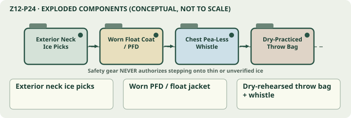

Z12-P24 · Extreme environments · Adapted historical material
Carry ice picks, float suits and throw bags only with dry-land rehearsal
Ensure specialized ice-safety gear carried by trained winter anglers or travelers is accessible and never substitutes for avoiding weak ice.
When it applies · Dedicated winter ice activities where participants choose to carry self-rescue and witness-rescue equipment (NOT an endorsement of unsafe ice).
Equipment · Neck-worn retractable ice picks, USCG-approved flotation jacket/suit, pea-less whistle, spud bar and dry-practiced throw bag.

Actions
- Wear retractable ice picks on a neck cord OUTSIDE your outer jacket where stiff freezing fingers can pull them immediately—picks buried inside a backpack or zippered pocket are useless in the water.[X18, E02, ED]
- Wear a USCG-approved flotation jacket or PFD over winter layers rather than carrying it stowed on a sled, and practice throwing a weighted rescue throw bag accurately on dry land before winter.[X04, X18, ED]
- Remember that carrying picks, float coats and throw bags NEVER makes thin or uncertain ice safe—they are last-resort mitigation tools, not permission to skip thickness checks or land detours.[X01, E12, X18]
Failure recognition · Tossing ice picks into the bottom of a gear sled or buying a throw bag and discovering in an emergency that the coiled line tangles ten feet short.[X18, E02]
Verify · Confirm neck-accessible picks, worn flotation, pea-less whistle and dry-land throw-bag practice before any permitted winter shoreline activity.[X04, X18, ED]
Stop or change course · Equipment cannot override open water, current weak zones or spring thaw—if ice safety is uncertain, stay completely on solid shore.[X01, E12]
Evidence and editorial notes
- E02 · NPS · Ten Essentials (current web edition)
- Section: Navigation; insulation; emergency shelter; emergency food and water · Conditions: Outdoor trips; adjust kit to season and route
Support: Carry essential systems including navigation, insulation, light, water and emergency shelter.
Limitations: Carrying items without practice or cold-weather verification does not ensure readiness. · Conflicting evidence: None; baseline kit system architecture.
Editorial note: Supports failure-mode packing and kit verification cards. · Specialist reviewer: Field education and search and rescue
Primary source · checked 2026-11-24 - E12 · Minnesota DNR · Ice Safety (current web edition)
- Section: Ice Safety > basic precautions · Conditions: Minnesota ice edges and travel routes
Support: No ice is universally safe. Strength can differ over short distances; appearance or tracks alone cannot establish a safe crossing.
Limitations: Currents, springs, snow insulation, and freeze-thaw cycles weaken ice invisibly. · Conflicting evidence: None; mandates shore-bound detour for foundational walking parties.
Editorial note: Maintains strict separation from specialized B013 ice chapters. · Specialist reviewer: Ice safety and search and rescue
Primary source · checked 2026-11-24 - X01 · Minnesota DNR · General Ice Thickness Guidelines (current web edition)
- Section: General Ice Thickness Guidelines > New Clear Ice Only · Conditions: Minnesota lakes and ponds during stable winter freezing
Support: Agency thickness guidelines apply ONLY to new, clear solid ice and are NEVER a guarantee of safety; white snow-ice is roughly half as strong, and currents, springs, inlets, outlets and snow cover create hidden thin zones.
Limitations: No ice is 100% safe; one drilled thickness check does not clear an entire crossing route. · Conflicting evidence: Directly reconciles B013 P01–P05, P11 and P17 with MN DNR warnings.
Editorial note: Enforces non-guarantee ice boundaries across Z12. · Specialist reviewer: Ice safety and winter search and rescue
Primary source · checked 2026-11-24 - X04 · US Coast Guard · Wearing Your Life Jacket (current web edition)
- Section: Wearing Your Life Jacket > Fit, Flotation and Cold Water · Conditions: Boating, paddling, coastal craft and icy-shoreline marine operations
Support: Wear a correctly fitted, fastened U.S. Coast Guard-approved life jacket suited to activity and wearer. Flotation reduces risk but does not guarantee airway position, especially when unconscious.
Limitations: Inflatable PFDs require arming inspection and are unsuitable for high-impact whitewater or non-swimmers per label. · Conflicting evidence: None; aligns with USCG-SAFE.
Editorial note: Grounds PFD readiness and maritime abandonment cards in Z12. · Specialist reviewer: Maritime safety and search and rescue
Primary source · checked 2026-11-24 - X18 · Minnesota DNR · What if you fall in? (Current web edition)
- Section: Self-rescue after falling in · Conditions: Cold-water ice breakthrough on frozen lakes or rivers
Support: Face the direction you came from if able, regain breathing control, kick and use the edge or picks, and remain low after exit. Prior support is not guaranteed safe ice.
Limitations: Ice rescue carries extreme drowning risk for untrained rescuers; dry practice and qualified rescue review are mandatory. · Conflicting evidence: Directly aligns with B013 P06–P08 and P14; carries high-consequence specialist review hold.
Editorial note: Anchored in Z12 ice-breakthrough cards and logged in the Astra escalation register. · Specialist reviewer: Ice rescue, EMS and wilderness medicine
Primary source · checked 2026-11-24
Source lineage · B013-P05/P13/P14 and MN DNR ice safety; adapted historical material · Classification · Adapted historical material.